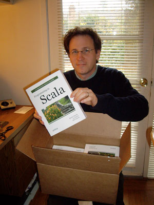
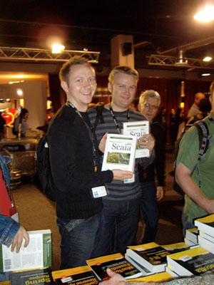

|
|
|
Sponsored Link •
|
Summary
Artima's first published book, Programming in Scala, made its bookstore debut last week at the Devoxx conference in Antwerp, Belgium, where it sold out. Twice.
|
Advertisement
|
It's been a long two years, filled with much toil and struggle, but at last we can hold the physical book in our hands. The paper book arrived on the west coast the day before Thanksgiving, and we captured in a photo the moment I pulled the first one out of a carton:
|  |
|  |
What a long journey to get to that moment. It all started two years ago in December 2006, when I emailed Martin Odersky, the designer of a then relatively unknown language named Scala, to set up a phone call. Frank Sommers and I had noticed a trend in our editorial work at Artima: functional programming seemed to be becoming more acceptable in mainstream programming circles. I had the idea that perhaps Artima could provide some leadership by helping people learn functional programming ideas. Or put another way, perhaps we could provide leadership by getting out in front and helping people get where they seemed to already want to go.
Our initial thought was that perhaps we could publish some articles on functional programming concepts using Scala for the examples, and this is what Frank and I asked Martin about on the call. Martin said he thought that would be a good idea, and added that he also wanted to try and create a book on Scala. I replied that we had been wanting to enter the arena of book publishing, to expand our web publishing activities to publishing with actual ink on real paper. It seemed like a good fit, so after further discussions we decided to embark on a Scala book project together.
At first Martin Odersky and Lex Spoon were the sole authors of the book, and I was the editor. But as we got deeper into the project it became apparent that it would help to have one more author, and so we added my name to the list and I started writing. All three of us poured enormous amounts of time into the project in the ensuing 18 months or so. Given that Scala is Martin's language, he was anointed the "benevolent dictator" of the book's content, but there ended up being very few issues about which we didn't ultimately all agree. Martin wrote a great deal of it, as did Lex and I. There is quite a lot from each of our personalities on those pages.
We published a first "PrePrint(TM) Edition" of the book one year ago this week, and made several updates available over time as we progressed. Through a link on each page of this PDF our early access readers gave us invaluable feedback that helped us shape Programming in Scala into an even better book.
Last week I was in Antwerp, Belgium for the Devoxx conference, where I teamed up with Ted Neward to give a half-day Scala tutorial. I also gave a conference talk entitled "The Feel of Scala," in which I illustrated what Scala programming is about by showing a lot of real code and live demos.
Right after my "The Feel of Scala" talk I was scheduled to do a book signing at Computerwinkeltje, one of the two bookstores at the conference. Given the paper books had only been completed about a week and a half earlier, and our fulfillment center had two days of holiday for Thanksgiving, our European distributor had to really rush books over the Atlantic to get them to Devoxx on time. Computerwinkeltje ended up with 40 copies.
When I arrived for the signing they informed me that Programming in Scala had been the best selling book both days so far, and as I sat there signing books it sold out. After that sales dropped of course, but luckily I had brought a carton of 10 books in my luggage. After subtracting one book to give to Stephan Janssen, who organizes Devoxx, I sold the remaining nine to Computerwinkeltje the next morning, who put them back out on the table. When I returned a couple hours later those were sold out as well. Also, I learned this morning that due to strong orders from Amazon.uk, our European distributor has already run out of stock themselves as well and wanted to reorder. So it has been an encouraging start.
I wanted to thank everyone who has bought our book, before or after its publication on paper, with a special thanks to the two smiling fellows in the lower left photo, who bought it at the book signing at Computerwinkeltje at Devoxx (and gave me permission to use the photo in my blog). We were a bit overwhelmed with all the orders at first, and as a result it took us a couple of weeks to get them all shipped. But all pre-order books are out the door, if not already at their destination then on their way. We're shipping new orders the day they come in. So if you don't have one yet, you can get one here:
http://www.artima.com/shop/programming_in_scala
Have an opinion? Readers have already posted 13 comments about this weblog entry. Why not add yours?
If you'd like to be notified whenever Bill Venners adds a new entry to his weblog, subscribe to his RSS feed.
 | Bill Venners is president of Artima, Inc., publisher of Artima Developer (www.artima.com). He is author of the book, Inside the Java Virtual Machine, a programmer-oriented survey of the Java platform's architecture and internals. His popular columns in JavaWorld magazine covered Java internals, object-oriented design, and Jini. Active in the Jini Community since its inception, Bill led the Jini Community's ServiceUI project, whose ServiceUI API became the de facto standard way to associate user interfaces to Jini services. Bill is also the lead developer and designer of ScalaTest, an open source testing tool for Scala and Java developers, and coauthor with Martin Odersky and Lex Spoon of the book, Programming in Scala. |
|
Sponsored Links
|